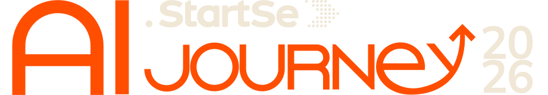
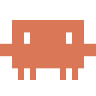

Copilot Cowork
Agente de trabalho dentro do Microsoft 365.
MicrosoftGraças ao JavaScript. Do pedido ao MP4,
sem After Effects, sem gerador de vídeo.

Agente de trabalho dentro do Microsoft 365.
MicrosoftAgente de trabalho da OpenAI.
OpenAIAgente de trabalho da Anthropic.
Anthropic
Agente de código no terminal. Onde a skill animate roda.
AnthropicAgente de código da OpenAI.
OpenAIQualquer agente que escreve e roda código consegue fazer vídeo. Muda a ferramenta, não a ideia.
Cada exemplo adiciona uma peça ao anterior. Primeiro sem skill: um frame desenhado por código, depois esse código virando MP4. Depois, com a skill, exemplos preenchidos com a turma.
O menor vídeo possível: uma frase entrando palavra por palavra. Sem skill, sem render. Só código que desenha cada frame, aberto no navegador.
Crie um arquivo index.html com um <canvas> 1920×1080 que anima, em 8 segundos, a frase "Vídeo virou código" entrando palavra por palavra, com um quique suave. Fundo escuro, texto laranja #ff4e00, fonte do sistema. Sem bibliotecas externas. Abra o arquivo no navegador quando terminar.
Tempo típico: 1 a 2 minutos até o arquivo abrir. Para personalizar, troque a frase pela da turma.
O mesmo arquivo do exemplo 1, agora virando um vídeo de verdade, com um quadro de revisão no meio do caminho.
Agora transforme esse index.html em MP4: capture 30 quadros por segundo com Playwright e junte com ffmpeg. Antes de exportar, capture um quadro em 2 s e em 6 s e me mostre. Se algum texto estiver cortado ou pequeno demais, corrija e refaça a captura. Entregue o arquivo final em renders/frase.mp4.
Tempo típico: 3 a 5 minutos, incluindo a correção.
Explicar um produto, uma ideia ou um resultado em 30 a 60 segundos é hoje a forma padrão de comunicar, dentro e fora da empresa.
Motion design exige ferramenta, especialista e dias de ida e volta. A maioria dos times simplesmente não faz.
Claude escreve, roda e revisa código com autonomia. Se vídeo pode ser código, vídeo também ficou barato.
Veo, Kling, Higgsfield. Realismo e cenas filmadas. Resultado variável, custo por segundo e pouco controle sobre texto e dados.
Cortes, legendas, dublagem, reframing. Ótimo para gravações reais. Não cria nada do zero.
Remotion, Manim, canvas. Cada frame é uma função do tempo. Determinístico, editável, ideal para explicativos, dados e motion de texto.
Hoje ficamos no terceiro caminho. Os outros continuam valendo para outros problemas.
A galeria Skillry reúne 418 vídeos feitos com Claude Opus 5.5, cada um com o prompt que o autor publicou. Nenhum editor de vídeo.
Lançamentos, reels de marca, showreels.
Como algo funciona, passo a passo.
Objetos e mundos que giram e se abrem.
Pequenos jogos jogáveis no navegador.
skillry.dev/ai-videos/opus-5-5 · contagem em 20/10/2026 · ferramentas relatadas pelos autores: canvas, Remotion, HyperFrames, Three.js.
Assunto, duração, formato e estilo. Claude escreve o roteiro em batidas.
Um arquivo HTML. Uma função desenha o frame para cada instante t.
draw(t)Um navegador sem janela abre o arquivo e fotografa frame por frame.
30 fps × 45 s = 1350 framesJunta os frames e o áudio em um MP4 pronto para compartilhar.
renders/share.mp4Vídeo virou código.
Sempre. Sem surpresas.
Sem letra distorcida, sem dedo a mais.
Captura um quadro, compara, corrige.
/animate Crie um vídeo dinâmico de motion graphics de 15 segundos que demonstre o quanto você é um designer de animação incrível, como se fosse seu portfólio profissional para um currículo. Dê o seu máximo. Não utilize nenhuma skill.
Sem referências. Nenhuma imagem de exemplo.
Sem estilo escolhido. Claude decidiu paleta, tipografia e ritmo.
Sem skill. Só o pedido e as ferramentas da máquina.
Zero arquivos de mídia. 1920×1080, 60 fps, imagem e som em código.
Uma página com uma única área de desenho e uma função que recebe um instante, por exemplo 7,25 s, e desenha aquele quadro do zero. Nenhum quadro fica guardado.
O “quique” das letras é uma mola calculada. O desfoque de movimento vem de desenhar cada quadro 4 vezes em instantes vizinhos e sobrepor, como o obturador aberto de uma câmera. As transições são metamorfoses: o O vira círculo, o círculo vira partículas, as partículas viram cubos.
Um script abre a página em um Chromium sem tela e pede o quadro 1, o 2, o 3... São 900 fotografias, repartidas entre 4 processos, em cerca de 2,5 minutos.
A aleatoriedade usa uma semente fixa, então o quadro 412 sai sempre igual. Dá para renderizar fora de ordem e em paralelo. No fim, o FFmpeg junta as fotos em um vídeo a 60 quadros por segundo.
Um segundo script calcula a onda sonora número a número: 48 mil por segundo, por canal. Cada instrumento é uma receita curta: o bumbo é uma nota grave que despenca; o chimbal é ruído com corte seco; o pad são três notas desafinadas com ataque lento.
A trilha nasce do mesmo roteiro da imagem: uma batida a cada meio segundo, cada som no instante exato do evento visual.
| Som | Receita, em palavras |
|---|---|
| Bumbo | Uma nota grave que despenca de tom em milissegundos, com um clique de ruído no ataque. |
| Chimbal e palmas | Ruído só nos agudos, com corte muito curto. A palma são três rajadas quase juntas. |
| Baixo e plucks | Ondas serrilhadas e filtradas; os plucks, duas levemente desafinadas com um filtro que fecha rápido. |
| Pad | Três ondas desafinadas por nota, com ataque lento: os acordes longos. |
| Whoosh, riser e impacto | Ruído com filtro que abre ou fecha, uma nota que sobe de tom; no impacto, bumbo mais sub-grave com cauda. |
| Reverb | Ecos com realimentação que simulam uma sala. |
Trilha e imagem nascem do mesmo roteiro: uma batida a cada 0,5 s, cada som no instante do evento visual.
Cada nível resolve uma limitação do anterior.
Pedir um HTML animado.
Renderizar, olhar, corrigir.
Copiar um estilo, não um vídeo.
Empacotar o processo inteiro.
Uma skill é uma pasta com instruções, regras e ferramentas que Claude Cowork carrega quando você pede um vídeo.
/animate [PROMPT]
Os níveis 1, 2 e 3 acontecem sozinhos, sempre na mesma ordem, com check-ins antes de gastar tempo animando.
github.com/cth9191/animate · MIT · gratuita
8 formatos curtos (história, missão, lista...). Regras: uma constante, cor significa uma coisa, silêncio antes do clímax, o fim é o começo transformado.
Aleatoriedade com semente, linha que “ferve” a cada 2 frames, câmeras, transições por metamorfose de formas e trilha sintetizada em código.
build, still, storyboard, export, review, compare. A revisão mede corte na batida, texto cortado, loudness e ancoragem do herói.
Também: voz narrada com timing por palavra, sua própria música mapeada em batidas, screenshots do seu produto e todos os formatos (9:16, 1:1, 4:5, 16:9) de um só vídeo.
| Passo | O que você vê | O que você decide |
|---|---|---|
| 0 · Intake | Perguntas: assunto, formatos, voz, estilo, herói, música, produto. | Respostas e um estilo ou referências. |
| 1 · Story check | Formato escolhido e tabela numerada de batidas, fatos checados na web. | Aprovar ou mudar batidas. |
| 2 · Look check | 2 a 4 frames no estilo, em tamanho real. | Aprovar frame a frame. |
| 3 · Storyboard | Cada batida como frame-chave, com som e transição. | Aprovar ou rejeitar por painel. |
| 4 · Build | Animação, render e revisão medida. | Nada: é automático. |
| 5 · Delivery | MP4 e os números da revisão. | Notas para uma rodada de revisão. |
# Node 18+, Playwright, ffmpeg npm i -g playwright npx playwright install chromium # dentro do Claude Code /plugin marketplace add cth9191/animate /plugin install animate@animate
Envie o link público do repositório e peça ajuda. O Cowork verifica o que falta, instala e testa.
Me ajude a configurar esta skill de vídeo no meu computador: https://github.com/cth9191/animate Verifique Node, Playwright com Chromium e ffmpeg, instale o que faltar e, no final, rode o demo de um estilo para confirmar.
Os vídeos ficam em pieces/<nome>/ no seu projeto. Voz opcional: Python com faster-whisper e o conector ElevenLabs.
Nada de animar antes do storyboard aprovado.Uma história ou visual errados custam um build inteiro.
Olhar referências antes de desenhar.As suas, ou o sample e o demo do estilo.
Todo fato na tela é checado na web.Nunca dizer “primeiro” sem fonte.
Um arquivo, tudo em código.Sem imagens, áudios ou fontes externas. Exceções: seus próprios assets e sua música.
Determinístico.Aleatoriedade com semente; nunca o relógio.
Referência fica local.Não se copia código nem se cita o artista sem pedido.
“Pronto” é medido.A revisão passa e os números são reportados, não “ficou bom”.
Perguntar com opções.Sempre com uma recomendação padrão para responder em um clique.
1920×1080 · 24 fps · 50 s · papel recortado · 12 eras ligadas por metamorfoses, um corte seco no clímax, trilha sintetizada. Clique no vídeo ou pressione V.
/animate uma explicação de 50 segundos sobre o surgimento do universo, do Big Bang até a era da IA, estilo papel recortado, 16:9, sem voz, para abrir um encontro do AI Journey.
Escolheu o formato “história” e um fio condutor: a faísca laranja nasce no Big Bang com 3 raios e ganha um a cada era, até 12. Montou a tabela de 12 batidas com datas e fontes, desenhou o storyboard (assets/exemplo-skill-storyboard.png) e só então animou. A revisão medida passou: cortes na grade, silêncio de 2 s antes da pancada mais alta, nenhum texto cortado.
Três exemplos, preenchidos com a turma e aprovados em etapas antes de animar.
Primeiro /animate, com check-ins.
Fatos com fonte, vários formatos.
Screenshots, música, batida.
Algo que vocês explicam toda semana e cansaram de explicar. Primeiro uso da skill.
Empresa, produto, projeto ou carreira: uma cronologia com um fio condutor.
Um site, um app ou um recurso novo, com screenshots de verdade dentro do estilo.
Assunto em uma frase e a única ideia a lembrar.
Duração e formatos (9:16, 1:1, 4:5, 16:9).
Estilo pronto ou pasta de referências.
Público e canal onde será exibido.
Com ou sem voz; com ou sem música própria.
Telas, logos e assets próprios a usar.
Fatos que aparecem na tela, com fonte.
O que não pode acontecer.
O conteúdo é informação: conceitos, processos, dados, histórias ilustradas, motion de texto, telas de produto.
Você precisa de consistência de marca, versões em vários formatos e revisão frequente.
O orçamento é tempo, não dinheiro.
Precisa de pessoas reais, cenas filmadas ou realismo fotográfico: gere pixels ou grave.
Já tem gravação e o trabalho é editar.
Uma imagem resolve. Nem tudo precisa se mover.
Cada frame é uma função do tempo. Nada de surpresas.
História, visual, storyboard. Animar é o último passo.
Estilo salvo, skill instalada, próximo vídeo em minutos.
Instale a skill e escolha um caso das práticas.
← → ou Espaço: navegar na janela principal · As notas editadas aqui são salvas no navegador.